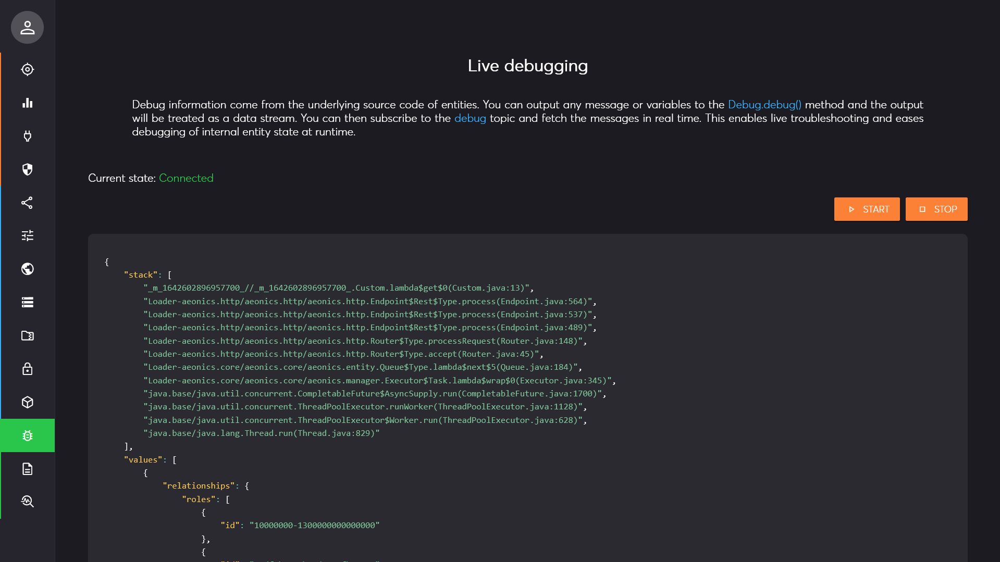
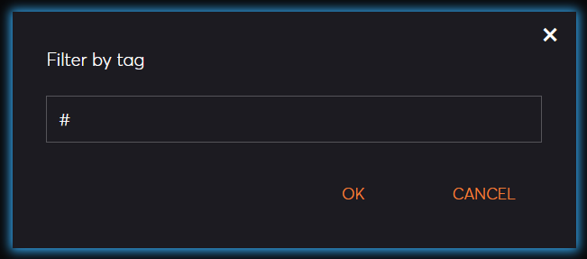

Management Interface Page: Debug
Description
This page allows display debug information in real time.
The concepts of debug and logs serve distinct purposes despite both providing real-time information.
Logs are structured, persistent records that capture events, errors, and operational details across the application lifecycle, primarily for auditability and retrospective analysis.
By contrast, debug outputs are transient and ad hoc, intended to inspect specific variables or internal states for immediate troubleshooting and development insights without retaining a permanent record. Unlike logs, which follow a standardized format and scope, debug outputs are flexible, providing tailored runtime information to understand and resolve issues dynamically without interfering with the core logging system.

Start / Stop
There are 2 actions available in the top right part of the page: Start and Stop.

When you click on the Start button, you can choose a filter to only return relevant debug information, this is the pub-sub capture filter
(the hashtag # means capture everything) that applies to the debug name tag.

Once the live capture is enabled, the connection indicator will be adjusted in the top left part of the page.

Debug Details
The main central region of the page will display debug messages as they are generated by the system. Each debug message is displayed as JSON with the following structure:
{
"stack": [],
"values": []
}
The stack component will contain the complete stack trace at the location of the debug point.. The values component will list the string representation of all debug values.
Debug points are set in the code using the Debug.debug() method. It accepts multiple parameters. The first parameter is the debug
name tag that can be used by the display filter. Any other parameter are variables that will be printed with their current value.
Example:
Debug.debug("test", foo, "bar", 42);
{
"stack": [
"_m_1642602896957700_//_m_1642602896957700_.Custom.lambda$get$0(Custom.java:13)",
...
],
"values": [
{"type": "Object", "name": "foo"},
"bar",
42
]
}